Duke Senior [of Jaques].
If he, compact of jars, grow musical,
We shall have shortly discord in the spheres.
Lor. My friend Stephano, signify, I pray you,
Within the house, your mistress [Portia] is at hand;
And bring your music forth into the air.
[Exit Stephano.
(Lorenzo and Jessica alone.)
Lor. How sweet the moonlight sleeps upon this bank!
Here we will sit, and let the sounds of music
Creep in our ears: soft stillness and the night,
Become the touches of sweet harmony.
* * * * *
L. 60.
There's not the smallest orb, which thou behold'st,
But in his motion like an angel sings,
Still quiring to the young-ey'd cherubims;
Such harmony is in immortal souls;
But, whilst this muddy vesture of decay
Doth grossly close it in, we cannot hear it.
This is finer than Pythagoras.
The next three passages are concerned with the 'fantasie' of Music. Jaques gives an opinion in a general form—viz., that the musician's 'melancholy' is 'fantastical'; Mariana and the Duke speak of a certain doubleness that may be noticed in the action of music on the mind. Jessica is 'never merry' when she hears sweet music: Lorenzo descants on the evident effects of music on even hardened natures; while Portia and Nerissa preach a neat little sermon on the text 'Nothing is good without respect,' with musical illustrations of the powerful influence of time and place—e.g., the silence of night, makes the music sound sweeter than by day; the crow sings as well as the lark, if the circumstances favour the crow, or if the lark is not present to give immediate comparison; and even the nightingale's song is no better than the wren's, 'by day, when every goose is cackling.'
As You IV, i, 13.
Jaques. I have neither the scholar's melancholy, which is emulation; nor the musician's, which is fantastical, etc.
Measure for Measure IV, i, 12. Enter Duke, disguised as a friar (after Song).
Mariana. I cry you mercy, sir; and well could wish
You had not found me here so musical:
Let me excuse me, and believe me so,
My mirth it much displeased, but pleas'd my woe.
Duke. 'Tis good: though music oft hath such a charm,
To make bad good, and good provoke to harm.
Merchant V, i, 66. Enter musicians.
Lor. Come ho! and wake Diana with a hymn:
With sweetest touches pierce your mistress' ear,
And draw her home with music.
[Music.
Jessica. I am never merry when I hear sweet music.
Lor. The reason is, your spirits are attentive.
For ... colts,
* * * * *
If they but hear perchance a trumpet sound,
Or any air of music touch their ears,
You shall perceive them make a mutual stand,
Their savage eyes turn'd to a modest gaze.
By the sweet power of music: therefore, the poet
Did feign that Orpheus drew trees, stones, and floods:
Since nought so stockish, hard, and full of rage,
But music for the time doth change his nature.
The man that hath no music in himself,
Nor is not mov'd with concord of sweet sounds,
Is fit for treasons, stratagems, and spoils;
The motions of his spirit are dull as night,
And his affections dark as Erebus.
Let no such man be trusted.—Mark the music.
L. 97. Portia and Nerissa.
Por. ... Music! hark!
Ner. It is your music, madam, of the house.
Por. Nothing is good, I see, without respect.
Methinks, it sounds much sweeter than by day.
Ner. Silence bestows that virtue on it, madam.
Por. The crow doth sing as sweetly as the lark,
When neither is attended; and I think,
The nightingale, if she should sing by day,
When every goose is cackling, would be thought
No better a musician than the wren.
How many things by season season'd are
To their right praise, and true perfection.
Here is an example of a superstitious meaning attaching to supposed mysterious music.
There are very few cases of this kind in Shakespeare—i.e., where the music of the stage is an integral part of the drama.
Antony and Cleop. IV, iii, 12. Music of hautboys under the stage.
4 Soldier. ... Peace, what noise?
1 Sold.List, list!
2 Sold. Hark!
1 Sold.Music in the air.
3 Sold.Under the earth.
4 Sold. It signs well, does it not?
3 Sold.No.
1 Sold.Peace, I say!
What should this mean?
2 Sold. 'Tis the god Hercules, whom Antony lov'd,
Now leaves him.
A very usual popular amusement was the Masque, which would consist of a public procession with decorated cars containing the characters, accompanied by hobby horses, tumblers, and open air music. This is referred to in the next passage, where Theseus speaks of the masque as an 'abridgement' for the evening, that is, an entertainment to shorten the hours. The lamentable play of Pyramus and Thisbe follows, which, it will be noticed, has some of the main features of a masque.
Mid's Night's Dream V, i, 39.
Theseus. Say, what abridgment have you for this evening?
What masque, what music?...
* * * * *
[Reads from the paper]
"A tedious brief scene of young Pyramus,
And his love Thisbe; very tragical mirth."
Merry and tragical! Tedious and brief!
That is, hot ice, and wonderous strange snow.
How shall we find the concord of this discord?
In the Merchant of Venice, Shylock mentions the procession of a masque through the streets, forbidding Jessica to look out of the window at these 'Christian fools with varnished faces.' The music accompanying the procession is named—viz., drum and fife.
Merchant II, v, 22.
Lancelot. 'You shall see a masque' ...
Shylock. What! are there masques?
Hear you me, Jessica.
Lock up my doors; and when you hear the drum,
And the vile squeaking of the wryneck'd fife,
Clamber not you up to the casements then,
Nor thrust your head into the public street
To gaze on Christian fools with varnish'd faces.
The 'vile squeaking of the wryneck'd fife' is of some musical interest. The adjective 'wryneck'd' refers, not to the instrument itself, which was straight, but to the player, whose head has to be slightly twisted round to get at the mouthpiece. Mersennus (b. 1588) says that the Fife is the same as the Tibia Helvetica, which was simply a small edition of the Flauto Traverso, or German Flute. That is, the Fife of those days was much the same as the modern Fife of the cheaper kind, with the usual six holes, and a big hole near the stopped end, where the breath was applied. The instrument was therefore held across [traverso] the face of the player, whose head would be turned sideways, and hence comes Shylock's description of it as the 'wryneck'd' fife.
In Much Ado, Benedick draws a distinction between the Drum and Fife and the Tabor and Pipe. The former (see Othello III. iii. 353) were of a decided military cast; whereas the latter were more associated with May Day entertainments, bull-baitings, and out-of-door amusements generally. The Tabor was a little drum, the Pipe (as explained before, in Section III., about Autolycus) a tiny whistle with only three holes. The two were played simultaneously by one person.
Much Ado II, iii, 13. Benedick, of Claudio in love.
Ben. I have known, when there was no music with him but the drum and the fife; and now had he rather hear the tabor and the pipe: ... but till all graces be in one woman, one woman shall not come in my grace. Rich she shall be, that's certain; wise, or I'll none; ... of good discourse, an excellent musician, and her hair shall be of what colour it please God.
Besides these more civilised 'pipes,' the country-man's pipe of cornstalk is mentioned by Titania, in Mids. II. ii. 8. This was really a 'reed,' not a whistle of any kind.
The tabor leads one on to the Tabourine, which was the full-sized military drum, corresponding to the modern side-drum. See Troil. IV, v, 275. 'Beat loud the tabourines,' and Antony IV, viii, 37, 'our rattling tabourines.'
The drum supplied the great proportion of military music in those days, besides having its importance as a means of signalling orders to the troops. This is dealt with more fully in the chapter on Stage Directions.
Parolles' sham anxiety about a lost drum is mentioned fourteen or fifteen times in All's Well III. v. and vi.; and IV. i. Parolles earns his nickname of 'Tom Drum,' in Act V. iii. 320.
The following is an interesting passage of a more serious kind—
K. John V, ii, 164.
Lewis [Dauphin.]
Strike up the drums! and let the tongue of war
Plead for our interest, and our being here.
Bastard. Indeed, your drums, being beaten, will cry out;
And so shall you, being beaten. Do but start
An echo with the clamour of thy drum,
And even at hand a drum is ready brac'd,
That shall reverberate all as loud as thine;
Sound but another, and another shall,
As loud as thine, rattle the welkin's ear,
And mock the deep-mouth'd thunder.
An entirely different use of the Drum is alluded to by Parolles, in his slanderous evidence against Captain Dumain.
All's Well IV, iii, 262.
1 Soldier. What say you to his expertness in war?
Parolles. 'Faith, sir, he has led the drum before the English tragedians, ... and more of his soldiership I know not.
There are several occasions in Shakespeare when trumpets are sounded to herald the approach of play-actors, but drums are not mentioned in this connection except here. Rimbault's Preface to Purcell's Opera 'Bonduca' (Musical Antiquarian Society) says that a Play was always introduced by the trumpet sounding three times, after which the Prologue entered. Dekker, referring to the list of errata in his 'Satiromastix,' 1602, says—"Instead of the trumpets sounding thrice before the play begin, it shall not be amiss for him that will read, first to behold this short Comedy of Errors."
With references to the same Words as they occur in the Text
Alarum, Alarums (of Drums), occurs as a stage direction about 72 times in fourteen of the historical plays, always in connection with battle. It is found alone, as above, about 45 times, sometimes qualified—e.g., Loud alarum, Low alarum, Short alarum, Alarum within. Alarums and Excursions occurs about 21 times, always in fight. ['Excursions' merely means 'parties of men running about;' see the stage direction H. 6. A. IV, vi. 'Excursions, wherein Talbot's son is hemmed about;' also Id. I, v, where the direction has 'Alarum. Skirmishings,' instead of the usual 'excursions.']
A few special cases are—Alarum with thunder and lightning, H. 6. A. I, iv, 97; Flourish and Alarums, used by Rich. III. to drown the reproaches of Q. Eliz., etc.; Alarum and chambers [cannon] go off, H. 5. Act iii. line 33 of the chorus, and again Id. end of scene 1; Alarum and cry within, 'Fly, fly, fly,' Jul. Cæs. V, v; Alarum afar off, as at a sea fight, Ant. IV, x.
Out of the 72 cases in the stage directions, 70 mean a call to battle by drums. There are only two exceptions, where the Alarum is identified with trumpets, H. 6. B. II, iii, 92, and Troil. IV, v, 112, 117.
Skeat gives the original of the term as 'all'arme' (Ital.) a war cry of the time of the Crusades. For the form of the word, he compares arum (arm) and koren (corn).
'Alarum' in the text.
The word is used 13 times in the text of Shakespeare; and in 6 of these it refers to drums, as in the stage directions H. 6. A. I, ii, 18, I, iv, 99, II, i, 42; R. 3. I, i, 7; Cor. II, ii, 76; H. 5. IV, vi, 35.
But in two of the remaining examples, alarum is distinctly said to be trumpets, H. 6. B. II, iii, 93 and V, ii, 3; while other more extended meanings are found—e.g., in Venus and Adonis, l. 700, where it refers to the noise of the dogs hunting the hare; in Macbeth II, iii, 75 and V, v, 51, where alarum is used of a Bell; also in Lucrece, 433, of Tarquin's 'drumming heart' 'giving the hot charge,' and Othello II, iii, 27, of Desdemona's voice, which Iago says is 'an alarum to love.'
Flourish, either simply in this form, or 'Flourish of Trumpets' (six times) or 'Flourish of Cornets' (twice), occurs about 68 times in seventeen plays.
Out of these, it is used some 22 times for the entrance or exit of a King or Queen; 12 times for the entrance or exit of a distinguished person not a king; 10 times in the public welcome of a Queen or great general; 7 times it marks the end of a scene; 6 times heralds a victorious force; twice announces the proclamation of a King; twice signalises the entrance or exit of Senate or Tribunes; and twice gives warning of the approach of Play-actors [See Section VI., at end], or the commencement of a Play. [Players in Hamlet, and Pyramus and Thisbe in Mids. Nt.].
Some solitary uses are where Rich. III. orders a Flourish to drown the reproaches of Qu. Eliz. and the Duchess of York; the occasion of the betrothal of H. V. and Katherine of France; and the public welcome of the three Ladies in Coriolanus. The last is A Flourish with drums and trumpets, which occurs several times. In Grove's Dictionary (under 'Fanfare') is given a seven bar Flourish which is believed to be of Charles II.'s time, and is still used at the opening of Parliament. [Appendix.]
'Flourish' in the text is only found twice. In Richard III. IV, iv, 149, 'A flourish, trumpets!—strike alarum, drums!' we have a clear definition of the two terms mentioned; and in Merchant III, ii, 49, 'even as the flourish when true subjects bow To a new-crowned monarch;' a reference to the principal use of the Flourish, which was to signify the presence of Royal persons.
Trumpets, A trumpet sounds, Trumpet sounded within, Drums and trumpets, Flourish of Trumpets (6 times).
One or other of the above occurs some 51 times in twenty-two plays, either alone, or in connection with Sennet, discharge of cannon, etc. On 18 of these occasions it announces the entrance or presence of a King or Royal personage; 13 times it figures as part of the proceedings in Duels; 10 times signifies the entrance or exit of principal persons, not royal, great generals, etc.; 3 times precedes a public procession, with Royal persons in it; twice it is connected with the advent of Royal Heralds; and once with the arrival of Players (Shrew, Prologue. See also Flourish).
Thus 'Trumpets' divides the honours with 'Flourish' as the mark of Royalty.
Examples of the use of the term in the text are numerous, and are found in most of the plays. They are not generally of very special interest.
Music, Music plays, Music within.
This direction is found 41 times in twenty-two plays, half of which are comedies.
In 8 cases we have Music during a speech or dream of one of the characters; 7 times as the symphony or the accompaniment to a Song; 7 times in Wedding processions or Pageants; 6 times for Dancing; and 5 times during a banquet.
To give a just idea of the amount of Stage Music considered necessary in or near Shakespeare's time, there must be added to the above, all the stage directions in other terms—e.g., Hautboys, which is found about 14 times.
Here are a few relics of Stage Music before Shakespeare's day.
The playing of the minstrels is frequently mentioned in the old Miracle Plays, and the instruments used were the horn, pipe, tabret, and flute. In the Prologue to the Miracle Play, Childermas Day, 1512, the minstrels are requested to 'do their diligence,' and at the end of the Play to 'geve us a daunce.'
In Richard Edwards's Damon and Pithias, acted in 1565, there is a stage direction. "Here Pythias sings and the regalles play." Also, when Pythias is carried to prison, "the regalls play a mourning song." Thus the Regal, a tiny organ that could be easily carried about, was considered a proper instrument for the stage. In the old Comedy, Gammer Gurton's Needle, 1566, mention is made by one of the characters of the music between the acts—
| "Into the town will I, my friendes to visit there, And hither straight again to see the end of this gere; In the meantime, fellowes, pype up your fidles: I say take them, And let your friends hear such mirth as ye can make them." |
In Gascoyne's Jocasta, 1566, each act is preceded by a dumb show, accompanied by "viols, cythren, bandores, flutes, cornets, trumpets, drums, fifes, and still-pipes." In Anthony Munday's comedy The Two Italian Gentlemen (about 1584), the different kinds of music to be played after each act are mentioned—e.g., 'a pleasant galliard,' 'a solemn dump,' or 'a pleasant Allemayne.' A little later, Marston, in his Sophonisba, 1606, goes into considerable detail as to the music between the Acts; after Act I., 'the cornets and organs playing loud full music'; after Act II., 'organs mixed with recorders'; after Act III., 'organs, viols, and voices'; after Act IV., 'a base lute and a treble viol'; and in the course of Act V., 'infernall music plays softly.' Fiddles, flutes, and hautboys are mentioned by other dramatists as instruments in use at the theatre at this time.
Rimbault's Introduction to Purcell's opera 'Bonduca' gives the names of twenty-six Masques and Plays produced between 1586 and 1642 (when the theatres were closed), all of which contained important music. Amongst them are Jane Shore, by Henry Lacy, 1586, with music by William Byrd; seven masques by Ben Jonson, dating 1600-1621, four of which had music by Ferrabosco; a masque by Beaumont (1612) with music by Coperario; a play Valentinian, by Beaumont and Fletcher (1617) set by Robt. Johnson; The Triumphs of Peace by Shirley (1633), with music by William Lawes and Simon Ives; several other masques, set by Henry Lawes, who did the music to Milton's Comus (1634), etc. The list also includes Shakespeare's Tempest, with Robt. Johnson's music, two numbers of which, viz., 'Full fathom five,' and 'Where the bee sucks,' are printed in Bridge's Shakespeare's Songs, with date 1612.
Retreat, or A Retreat sounded, generally with Alarum, or Excursions, or with both.
Retreat by itself occurs only three times, but in company with Alarums and [or] Excursions may be found in 16 other places. The whole 19 cases occur in eleven plays.
The word explains itself. The actual notes of a Retreat of Shakespeare's time are not known.
In the text it has the same meaning.
H. 6. A. II, ii, 3. 'Here sound retreat, and cease our hot pursuit.'
H. 6. B. IV, viii, 4. 'Dare any be so bold to sound retreat or parley, when I command them kill'?
H. 4. A. V, iv, 159. 'The trumpet sounds retreat; the day is ours.'
H. 5. III, ii, 89. Macmorris, 'the work ish give over, the trumpet sound the retreat.'
March, Dead March.
There are 18 marches provided for altogether; 4 are Dead Marches; 3 National—viz., English, French, and Danish; and 11 ordinary military marches.
Probably all are identified with Drums, without any other instruments. For the three national marches, see H. 6. A. III, iii, 30 and 33, and Hamlet III, ii, 91.
Hawkins gives (Hist., p. 229) the text of a Royal Warrant of Charles I., ordering the revival of the ancient 'march of this our English nation, so famous in all the honourable achievements and glorious wars of this our kingdome in forraigne parts [being by the approbation of strangers themselves confest and acknowledged the best of all marches].' The warrant goes on to say that this ancient war march of England 'was, through the negligence and carelessness of drummers, and by long discontinuance, so altered and changed from the ancient gravitie and majestie thereof, as it was in danger utterly to have bene lost and forgotten.' It appears that 'our late deare brother prince Henry' had taken steps to have the old march restored, at Greenwich, in 1610; 'In confirmation whereof' the warrant orders all English or Welsh drummers to 'observe the same,' whether at home or abroad, 'without any addition or alteration whatever.' 'Given at our palace of Westminster, the seventh day of February, in the seventh yeare of our raigne, of England, Scotland, France, and Ireland.'
Then follows the march, expressed both in musical notes and onomatopoetic words. It consists of a Voluntary, and then seven lines of 'The March,' each of which ends with a 'pause.' The first line is given thus—
| Pou | tou | Pou | tou | poung. |
The next three lines are very similar. Line 5 is more elaborate, and the last two lines run as follows:—
| R | R | R | R | poung. |
| R | R | R | pou | R | R | pou | tou | pou | R | tou | pou | R | poung | potang. |
See the appendix for the translation into musical notes, which is given in the warrant itself, but the accuracy of which is questionable.
It seems pretty clear that this ancient march of England is of a period long anterior to the warrant of Charles I. Several passages of that document point to this. At any rate, it was so old as to have almost dropped out of knowledge in 1610.
Hawkins gives an interesting note, in which he mentions that the characteristic of the old English march of the foot was 'dignity and gravity,' in which it differed greatly from that of the French, which is given by Mersennus (b. 1588) as 'brisk and alert.'
There is a curious story of a conversation between Marshal Biron, a French general, and Sir Roger Williams, a gallant Low-country soldier of Elizabeth's time. The marshal observed that the English march being beaten by the drum, was slow, heavy, and sluggish. 'That may be true,' answered Sir Roger, 'but slow as it is, it has traversed your master's country from one end to the other.'
The references in Shakespeare all go to confirm the opinion that the March was played by drums alone—e.g., H. 6. C. I, ii, 69, where the stage direction is A march afar off, which is immediately followed by 'I hear their drums.' Again, in the same play, Act IV., sc. vii. line 50, 'Drummer, strike up, and let us march away. [A march begun.]
Hautboys. This is an important musical term, and occurs about fourteen times in eight plays. It always implies a certain special importance in the music, and is generally connected with a Royal banquet, masque, or procession. In six cases, at least, the direction has some special qualification—e.g., Hautboys playing loud music; A lofty strain or two to the hautboys; Trumpets and hautboys sounded, and drums beaten all together. In Ant. IV, iii, 12, Hautboys supply the supposed ominous 'music in the air.'
The term is closely connected with 'Music,' the remarks on which apply equally to the present case. (See above, on 'Music,' and the music of 16th century plays).
Not long after Shakespeare's time, orchestral music for the theatre consisted of stringed instruments only (i.e., the violin family, violins, violas, violoncellos, and the sole surviving 'viol,' the double-bass) with harpsichord, for general use; while in the more important pieces, hautboys, and sometimes flutes as well, were added, playing, as a rule, with the 1st and 2nd violin parts. This, at any rate, is the case in Purcell's operas. (Purcell died 1695). Thus the word Hautboys represented very nearly the climax of power to 17th century ears. Anything beyond this was supplied by the addition of trumpets, though this was rare; while Drums were very occasionally used.
The stage direction in Shakespeare may be taken to mean—'Let the hautboys be added to the usual band of strings.' In the last of the above examples, Coriol. V, iv, 50, we have the extreme limit of power of this time provided for—viz., trumpets and hautboys and drums, all together. It is interesting to notice the wording of Menenius's description of this stage music. 'The trumpets, sackbuts, psalteries, and fifes, Tabors and cymbals.' The 'sackbut' was merely our modern slide trombone, while the rest of these instruments were in common use in the 16th century, except the Psaltery, which Kircher (b. 1601) says is the same as the Nebel of the Bible. The picture he gives is remarkably like the dulcimers which may be seen and heard outside public-houses to this very day, i.e., a small hollow chest, with the strings stretched across it. An instrument of this kind could be played with the fingers, like a harp, or with a plectrum, like a zither, or with two little knob-sticks, like the dulcimer. Mersennus (b. 1588) also identifies the Psaltery with the Dulcimer.
In the text, the Hautboy is only named once, in H. 4. B III, ii, 332, near the end of Falstaff's soliloquy, on old men and lying, where he says that Shallow was such a withered little wretch that the case of a treble hautboy was a mansion for him, a court.
The 'treble' hautboy corresponds with our modern instrument, and was the smallest in size of the hautboy tribe, of which only two now survive—viz., the Oboe proper, and its cousin, which is a fifth lower in pitch, and correspondingly larger, and which has curiously picked up the name of Corno Inglese, Cor Anglais, or English Horn. None the less it is the Alto Hautboy. The tenor and bass of the family have not survived. Hautboys in four parts were the backbone of the French regimental bands in Lully's time—i.e., about 1670. [Appendix.]
The spelling of the word in the old editions of Shakespeare is 'hoeboy,' which is very like the modern German Hoboe.
Sennet. This is a rare direction, and is found only nine times in eight plays, as against sixty-eight 'Flourishes' and fifty-one 'Trumpets.' The notes of a sennet are unknown. Three times it marks the entrance or exit of a Parliament, three times is used in a Royal or quasi-royal procession, and the remaining cases are royal, or near it.
In the 1st Folio of Hen. V., the word is spelt senet, but in later ones, Sonet, as if the former were a misprint. In Marlowe's Faustus (published 1604), Act iii. sc. i., we find 'sound a sonnet' [enter Pope, Cardinal, etc.]. Also the French Cavalry of 1636 used trumpet calls named Sonneries. These seem to point to a derivation of the word from sonare, and thus the spelling ought to be sonnet, not sennet.
But other forms are found—Synnet, Signet, Signate, which may be proper derivatives of signum, and thus make this trumpet call 'a signal,' instead of 'a sounding'; or (which is as likely) may be corruptions, perhaps of the somewhat featureless form 'Synnet,' caused by a misunderstanding of the original misspelling 'senet.'
In the text of Shakespeare the word does not occur.
Cornets, or Flourish Cornets (only twice).
This is also rare, occurring only eight times in four plays. One case only is in war, the others being all connected with Royal or triumphal processions.
The term is by no means synonymous with Trumpets. The Cornet was an entirely different instrument, and the use of it accordingly is very much more limited in these stage directions. There were two instruments called Cornet, the one with a reed, a coarse sort of Oboe which was nearly obsolete in the 17th century; the other, with which we are concerned, a sort of Horn (hence its name), with a cup mouthpiece, and finger holes for the intermediate notes of the scale. Hawkins gives pictures of a treble, a tenor, and a bass cornet, copied from Mersennus, who remarks that the sounds of the cornet are vehement, but that those who are skilful, such as Quiclet, the royal cornetist (i.e., of France, 1648) are able so to soften and modulate them, that nothing can be more sweet.
Many people now living will remember the Serpent, a large, black, curly instrument, of thin wood covered with leather, which helped to play the loud bass in oratorios, within the last fifty years. This Serpent was a true Cornet in every respect. It may now commonly be seen in Exhibitions, Museums, and curiosity shops, for it has been entirely superseded by the Bass Tuba and the Euphonium.
In the text the word Cornet does not occur.
Tucket. Rare, only seven times in six different plays. This is one of the several trumpet calls we have noticed. It seems to have been a French term, toquet, or doquet, and this is defined by Littré, as quatrième partie de trompette d'une fanfare de cavalerie—that is, the name 'toquet' was applied to the fourth trumpet in a cavalry fanfare. Mr Aldis Wright, in his Clarendon Press Edition of Hen. V., gives Markham, quoted by Grose in 'Military Antiquities,' which explains 'Tucket' as a trumpet signal, which, 'being heard simply of itself without addition, commands nothing but marching after the leader.' Certainly in Shakespeare it seems to be used as a personal trumpet call—e.g., Merchant V, i, 121, Lorenzo says to Portia, 'Your husband is at hand; I hear his trumpet—'i.e., the 'tucket sounded' which is indicated in the stage direction. Other cases of the use of the Tucket are quite similar—for instance, the return of Bertram, Count of Rousillon, from war; the arrival of Goneril (Cornwall. What trumpet's that? Regan. I know't, my sister's:) or the embassy of Æneas. Once it is used to herald Cupid and the masked Amazons, in Timon; and twice at the entrance of Montjoy, the French Herald, in Hen. V.
The derivation of the word from toccare, and its connection with tocco di campana, tocsin, and tusch, have already been explained in the notes on Hortensio's music lesson to Bianca. (See Sec. II.)
In the Appendix is given an Italian Tucket of 1638, and a French one of 1643.
In the text the word is only found once—viz., H. 5. IV, ii, 35, where the Constable of France orders the trumpets to 'sound the tucket-sonance, and the note to mount,' which fits in with Markham's definition, for the passage appears to recognise the tucket as in some sort a preparatory signal.
It is perhaps worth noting, that of the seven tuckets in the stage directions, only one, Goneril's, is supposed to be an English one. In the single instance just given of its use in the text, it is a French general who uses the word. Perhaps this may be regarded as confirming the view of its foreign origin.
Parley, or Trumpets sound a parley, either alone, or with Retreat. This call is named in the stage directions 7 times in five plays, viz.—H. 6. A. three times; H. 6. B. once; R. II. once; H. 4. A. once; and H. 5. once. It means either a trumpet call announcing an embassy from one party to the other, or for cessation of hostilities during the fight itself. Of course the name is derived from parler, with a reference to the proposed 'pow-wow' of the opposing forces.
The notes of a parley do not appear to exist.
[Perhaps a little light may be got out of the symphony to Purcell's duet in King Arthur, 'Sound a Parley ye fair.']
In the text, the word is used several times. In three cases, John II, i, 205, 226 and H. 5. III, iii, 2, 'the parle' means the conference of the parties itself, not the trumpet call summoning them. In the rest, 'parle' or 'parley' simply means the sound of the trumpet, as explained above. H. 6. B. IV, viii, 4; R. 2. I, i, 192, III, iii, 33; H. 6. C. V, i, 16; Othello II, iii, 23.
Horns, or Horns wind a peal, or Horns winded.
This is very rare. Seven times in only four plays, one of which is the doubtful Titus Andronicus.
Three times it is used of hunting horns, Titus II, ii, and Id. l. 10, and in the Induction of the Taming of the Shrew; twice as a part of Lear's lessened state, Lear I, iii and I, iv; once announcing the Post from England, H. 6. C. III, iii; and once blown by Talbot as a military signal at the forcing of Auvergne Castle gates, H. 6. A. II, iii.
The 'peal' of horns referred to in Titus II, ii, 10 is a technical term in forestry for a particular set of notes on the horn. Méhul (1763-1817), in his overture 'Le jeune Henri,' introduces several old French hunting fanfares, which perhaps may give an idea of what was meant by 'Horns wind a peal.' [See Appendix.] Also in Purcell's 'Dido and Eneas,' No. 16 (date 1675), in the scene between the Sorceress and the two witches who are plotting the destruction of 'Elissa,' at the words 'Hark! the cry comes on apace,' the violins give an imitation of a hunting call.
The only instance of the use of the word 'peal' in the text is in the same passage, Titus II, ii, 5, where Titus tells his hunters to 'ring a hunter's peal.' Here we have a last example of punning on a technical term of music.
1. Example of Descant [Lucrece, 1134] from Morley, 1597 (see Introduction, p. 6 and p. 24).
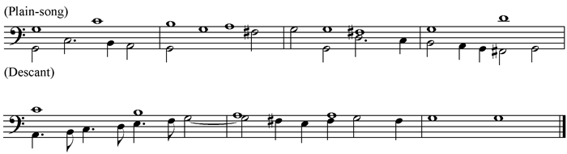
[Listen]
If the lower part was added extempore, it was called Descant, but if written down as here, it was called Prick-song, because 'pricked' down. The Plain-song is perhaps more often found in a lower part, the Descant being higher. From the position of the added part, the above example is called 'bass' descant.
2. Divisions on a Ground Bass for viol-da-gamba, by Christopher Sympson, 1665, see p. 28. Rom. III, v, 25.
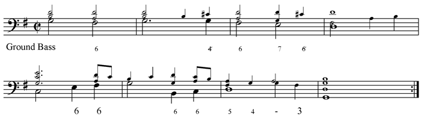
[Listen]
The 'Ground' itself is in large notes, the necessary chords (which were never written down) are indicated in small notes. This the Organist or Harpsichordist plays again and again, as often as necessary.
Here is a Division for the Viol, such as the player would produce extempore, with the above Ground before him.
Division No. 1.
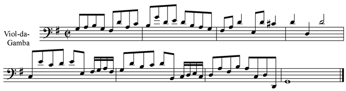
[Listen]
Division No. 3 (more elaborate).
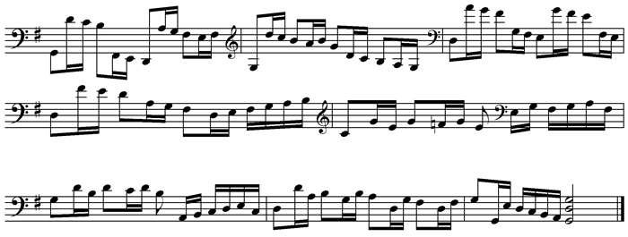
[Listen]
3. Example of Sol-Fa, 16th and 17th centuries, see p. 35. Lear I, ii, 137.
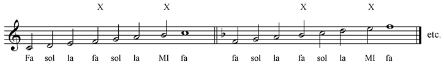
[Listen]
The augmented fourths formed by the notes fa and mi, marked with x, are the mi contra fa, which diabolus est, or 'is the divider,' see p. 36.
Solmisation of the six notes of the Hexachord, 11th century, see p. 37. Shrew III, i, 72.
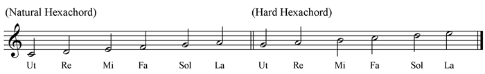
[Listen]
The six notes from F, with B flat, were called the 'Soft' Hexachord.
4. Lesson for the Lute, by Thomas Mace, b. 1613, from Musick's Monument, 1676, see p. 55. Shrew III, i, 58.
"My Mistress."
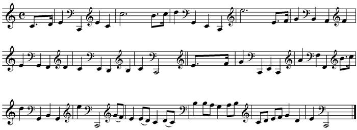
[Listen]
Cf. p. 30, on 'Broken' music.
5. Tune of Light o' Love, original words not known, but date before 1570, p. 70. Much Ado V, iv, 41, etc.
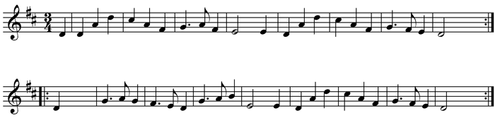
[Listen]
6. Parson Hugh's song, 'To Shallow Rivers,' tune anonymous, date probably 16th century, p. 71. Merry Wives III, i, 18.
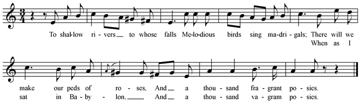
[Listen]
7. 'Come Live with Me,' tune printed 1612, but probably much older. See p. 71. Marlowe's 'Passionate Pilgrim,' XX., or Merry Wives III, i, 18.
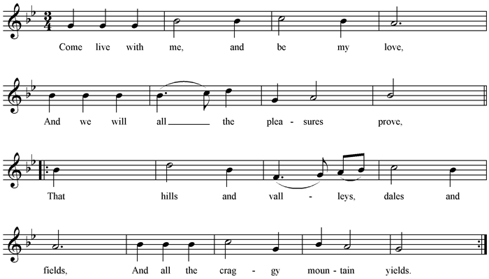
[Listen]
8. Peg-a-Ramsey, p. 71. Tw. Nt. II, iii, 76.
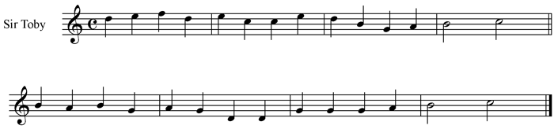
[Listen]
9. 'Three Merry Men be We,' p. 71. Tw. Nt. II, iii, 76. Words from Peele's 'Old Wives Tale,' 1595, where it is sung. Music from J. Playford, 1650 circ., but may be older.
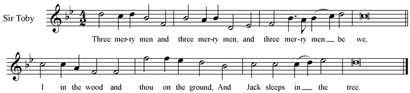
[Listen]
10. 'There Dwelt a Man in Babylon,' p. 71. Tw. Nt. II, iii, 80. Music anon., but most probably later than Shakespeare's time.
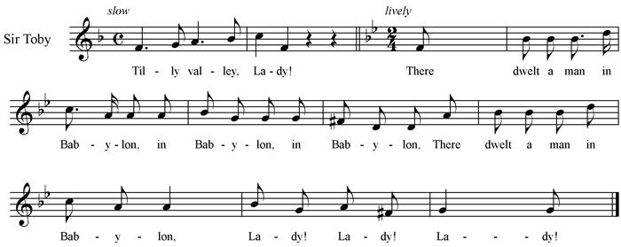
[Listen]
Here is one verse of the 'Ballad of Constant Susanna,' to which Toby refers.
| 'There dwelt a man in Babylon Of reputation great by fame; He took to wife a faire woman, Susanna she was callde by name. A woman faire and vertuous, Lady, lady! Why should we not of her learn thus To live godly?' |
11. 'Farewell, Dear Heart,' p. 72. Tw. Nt. II, iii, 102.
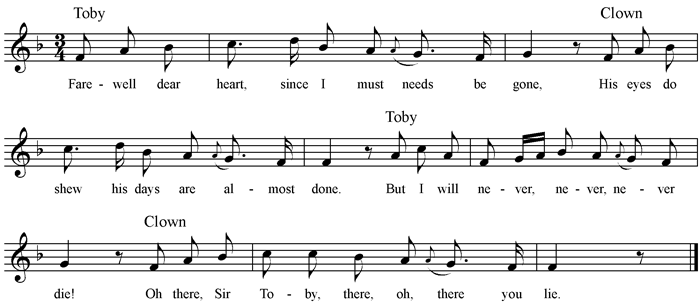
[Listen]
This can hardly be the original tune to "Corydon's Farewell to Phillis," from parts of the first and second verses of which the above words are quoted. See Percy's "Reliques," Vol. I.
12. Here are two relics of music for the Clown in Tw. Nt. IV, ii, probably of the same period as the above.
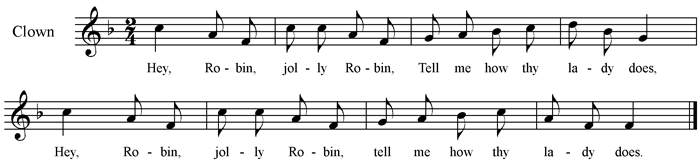
[Listen]
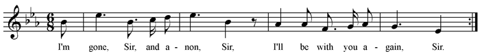
[Listen]
For the rest of the words of 'A Robyn, Jolly Robyn,' see Percy's Reliques, Vol. I. p. 148.
13. 'Whoop, do me no harm, good man,' p. 72. Winter's Tale IV, iii, 198. The rest of the words unknown, but several ballads printed in latter part of 16th century go to this tune—
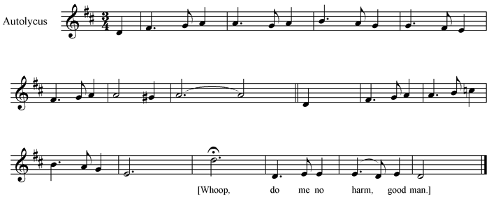
[Listen]
14. Stephano's 'scurvey tunes,' Tempest II, ii, 41, see p. 73. "As sung by Mr Bannister" [1667].
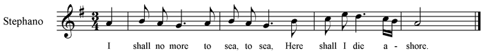
[Listen]
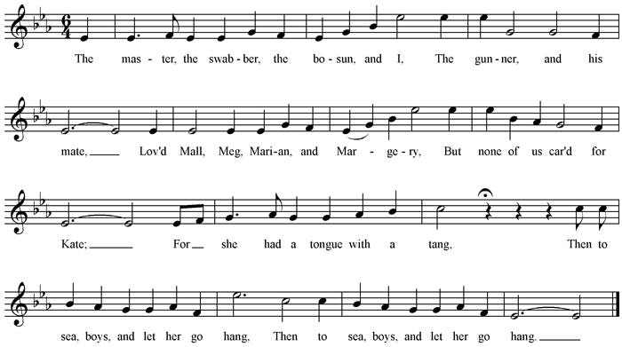
[Listen]
15. 'Jog On,' p. 72, Winter's Tale IV, ii, 125. Two more stanzas were first printed 1661, see Chappell, Vol. I. 160. The tune is from the Fitzwilliam Virginal Book (Queen Elizabeth's Virginal Book), where it has the name
Hanskin.
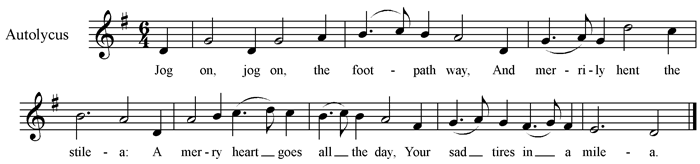
[Listen]
16. 'The Hunt is up,' see p. 73, and Rom. and Jul. III, v, 34. The tune is at least as old as 1537, when John Hogon was proceeded against for singing it with certain political words.
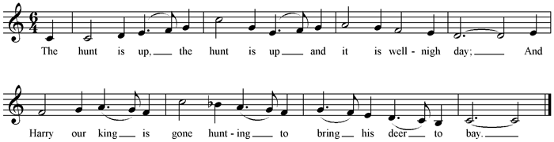
[Listen]
Grove [see under Ballad] gives quite another tune, to which 'Chevy Chase' also was sung.
The tune here printed was also sung (1584) to 'O sweete Olyver, leave me not behind the,' but altered to four in a bar. See As You III, iii, 95, where a verse is given which will easily fit to the music.
17. 'Heart's Ease,' p. 73. Rom. IV, v, 100. Words not known. Tune before 1560.
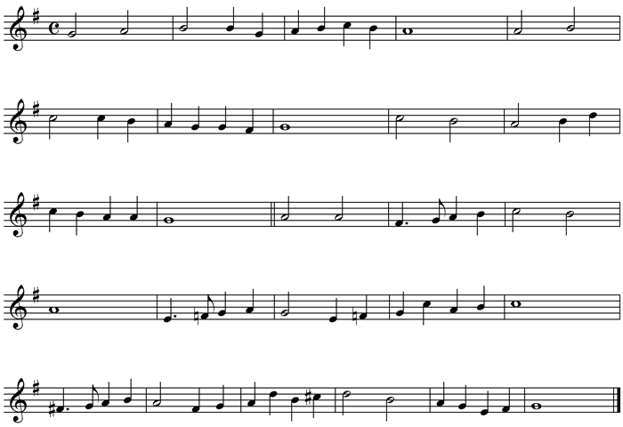
[Listen]
18. 'Where Griping Grief,' p. 73, Rom. IV, v, 125, by Rich. Edwards, poet and composer, 1577.
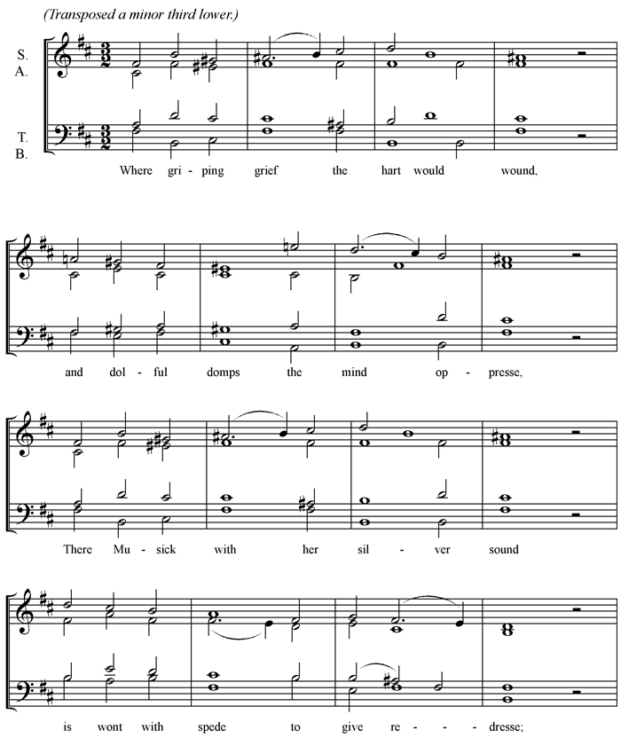
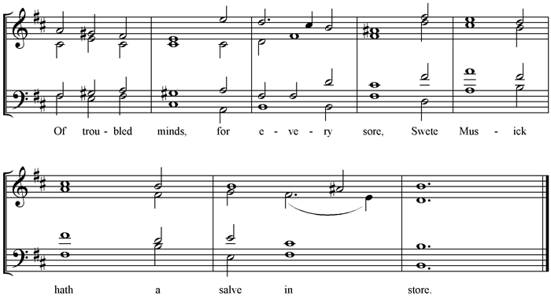
[Listen]
19. 'Green Sleeves,' see p. 74, and Wiv. II, i, 60, etc. The tune is probably of Henry VIII.'s time.
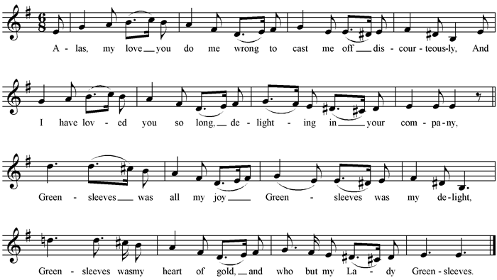
[Listen]
20. 'Carman's Whistle,' p. 76, H. 4. B. III, ii, 320. Tune as given by Byrd, who wrote variations on it before 1591.
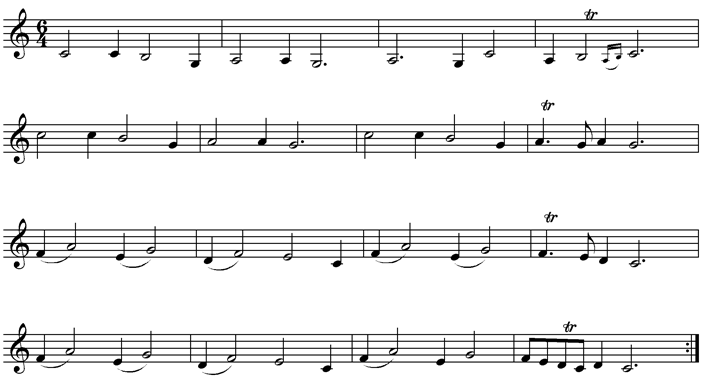
[Listen]
21. 'Fortune my Foe,' p. 76, Merry Wiv. III, iii, 62. This old tune is, at latest, of Elizabeth's day, and most likely much older. The words here set are given in Burney, and the harmony is by Byrd, who wrote variations on it for Queen Elizabeth's Virginal Book.
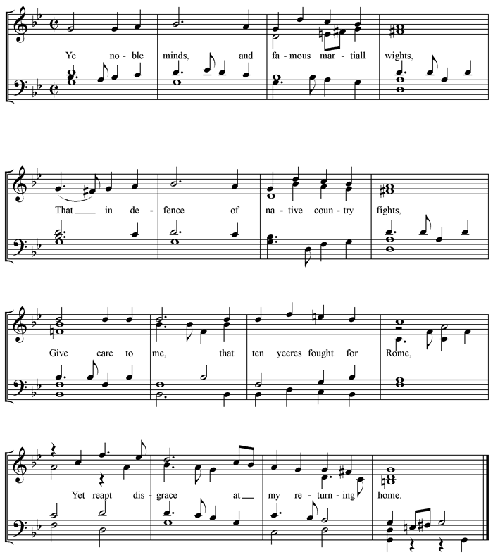
[Listen]
The above words are the first verse of 'Titus Andronicus's Complaint,' which Burney says was originally written to this tune. The ballad is given in full in Percy's Reliques, Vol. I. p. 180.
22. Ophelia's Songs, p. 76, Hamlet IV, v.
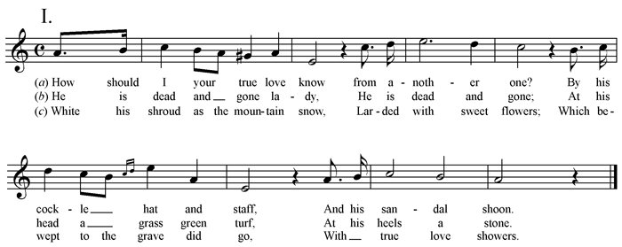
[Listen]
This is certainly old, early 16th century. The tune has a striking likeness to 'Walsingham,' which is the first piece in the Fitzwilliam Virginal Book. See Percy's Reliques, Vol. II. p. 75. But the date of the next is not so certain, though probably it is of Shakespeare's time.
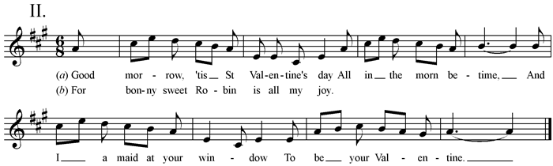
[Listen]
The next two are of the same period as I.
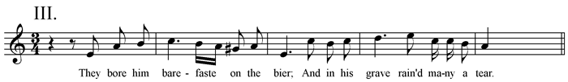
[Listen]
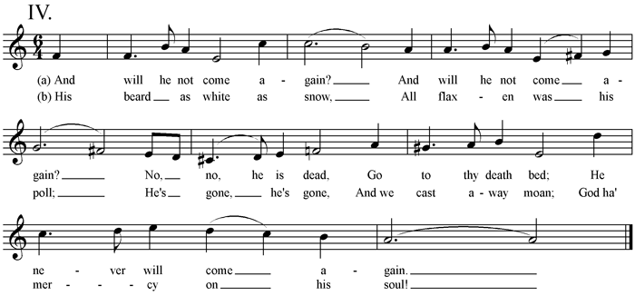
[Listen]
L. 184, 'Bonny sweet Robin.' With the exception of this one line, and the title, 'My Robin is to the greenwood gone,' nothing remains of this song, but the following tune, which is of some date before 1597.
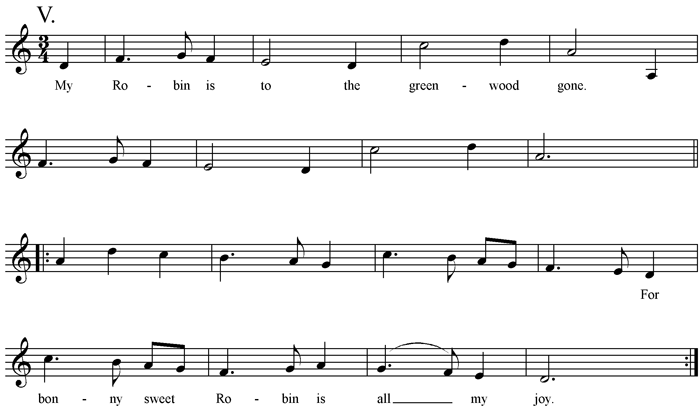
[Listen]
23. Catches, of 16th century, prob. long anterior to Shakespeare.
I. 'Hold thy peace,' see p. 77, Tw. Nt. II, iii. For three voices, Sir Toby, Sir Andrew, and Feste the clown, who begins the catch. The second man follows when the first has arrived at . For the explanation see p. 90.
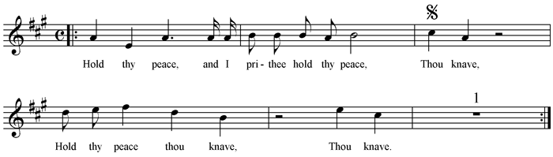
[Listen]
'Thou knave' will be heard nine times for every once the whole tune is sung by one of the voices.
II. 'Jack boy, ho boy, news,' see p. 92, and Shrew IV, i, 42. This is very old, prob. quite early 16th century (see Introduction).
For four voices. The second man comes in at , as before.
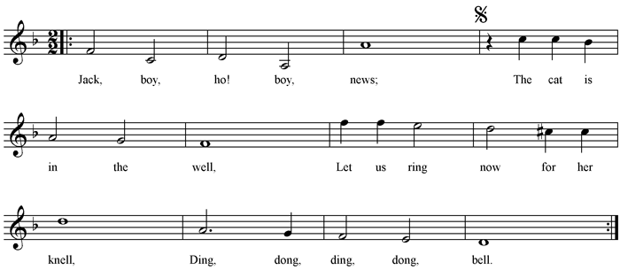
[Listen]
24. Threeman songs (corrupted into 'Freeman,' see p. 83). These were entirely different from Catches. A Threeman song is merely (as a rule) a song with three parts,—e.g., two trebles and a tenor, etc. Winter's Tale IV, ii, 41, and IV, iii, 285-327.
Here is a Threeman song, published in 1609, but probably much older than that.
Transposed down a 4th.
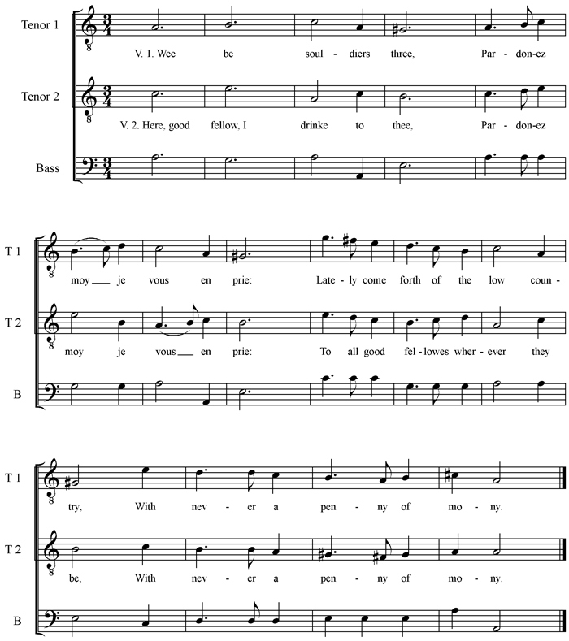
[Listen]
There are two more verses of the same sort.
25. 'Canst thou not hit it,' L.L.L. IV, i, 125. No more words known, except this one verse.
The tune is mentioned as a dance in an Elizabethan play, and is alluded to in an old ballad 'Arthur a Bradley.'
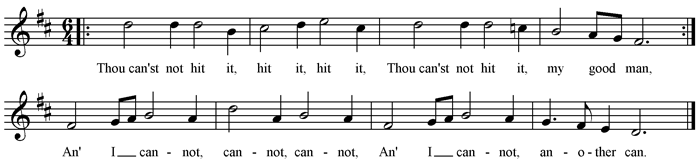
[Listen]
26. Dances. [Also see Note on Arbeau's Orchésographie.]
(a.) Pavan and Galliard, 'St Thomas Wake,' by Dr Bull, from Parthenia, printed 1611. (Bull was born 1563.) See p. 114.
Pavan [if played quick became Passamezzo. Tw. V, i, 200].
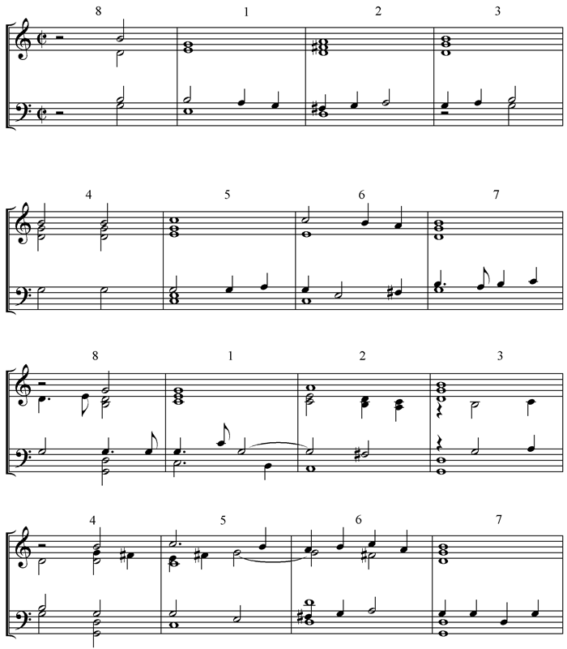
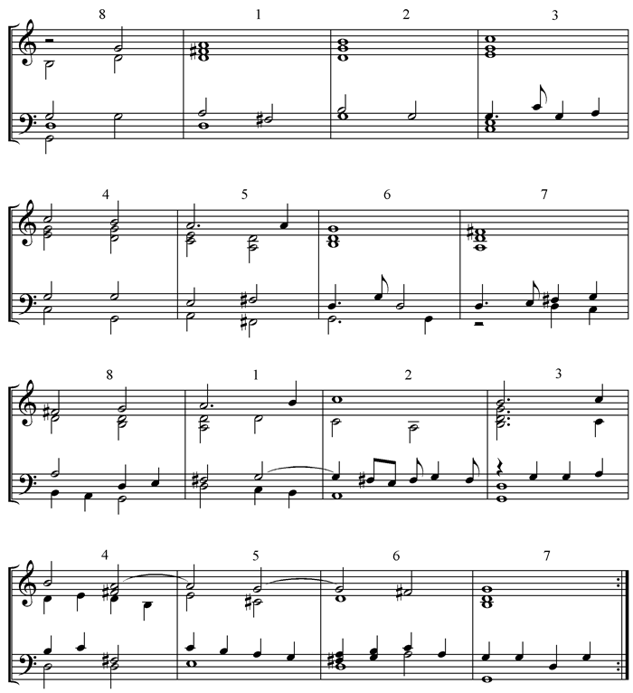
[Listen]
Galliard St Thomas Wake, the same music but in triple time. Tw. I, viii, 127, H. 5. I, ii, 252.
Galliard, or Cinquepace.
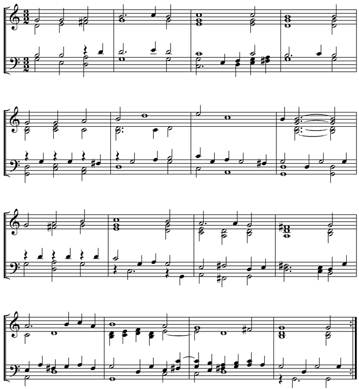
[Listen]
(b.) 1. Part of a 'Passamezzo,' date 1581. (See Note on Arbeau's Orchésographie.) Tw. V, i, 200. See p. 135.
Passe mezzo, or Measure (As You V, iv, 178, etc.)
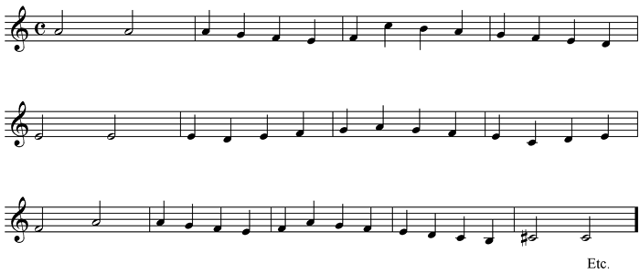
[Listen]